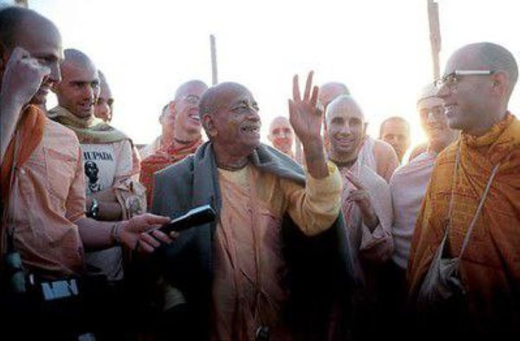

"When we looked up, Srila Prabhupāda had disappeared"
Posted on : 13th february, 2025

Some beautiful Deities had arrived prior to Śrila Prabhupảda's first visit. There is a long history of how they came to Dallas, involving an apparent switching of the forms of Śrimati Rādhārāni. The Deity of Krsna was very old, rumored to have been found in a museum in Jaipur gathering dust and being used as a doorstop. There are also different versions as to who discovered the Deity and how He was acquired. Once Srila Prabhupāda's saw Him, he immediately decided He should go to Dallas. This particular form of Krsna was ancient (perhaps even from the time of Lord Caitanya), magnificent, and beautiful with a large head and rounded face, and He looked as though He could easily see to the protection of us all.
When it came to the installation, devotees were up all night, sewing, cleaning, preparing prasādam, and gathering ingredients for the offering. Some mistakes were made in repainting the Deities, well-documented in the Srila Prabhupāda-lilamrta," but somehow, the morning arrived and Satsvarüpa dāsa Gosvāmi began to bathe the Deities under Srila Prabhupāda's direction. After the installation was completed, everyone offered their obeisances. When we looked up, Srila Prabhupāda had disappeared. No one seemed to know where he was. Even Śyämasundara Prabhu, his servant, seemed bewildered as to his whereabouts. Later, the story came out from the devotees behind the curtains. The moment the devotees had bowed down, Śrila Prabhupäda had leapt up with tremendous energy and gone behind the curtain in order to personally offer the first arati.
~ Rupa vilāsa Dasa, Without Fear glimpses of Srila Prabhupāda Pg. 142-143.